Introduction
Faspay adalah online payment gateway yang menyediakan kemudahan untuk merchant dalam transaksi online. Faspay memberikan kemudahan dalam berbagai jenis pembayaran salah satunya adalah transaksi kartu kredit dengan Faspay Credit. Faspay Credit merupakan salah satu produk Faspay yang memfasilitasi transaksi kartu kredit di merchant.
Jenis kartu kredit yang sudah integrasi dengan faspay kredit :
- Visa
- MasterCard
- JCB
- Amex (American Express)
- Octopay (CIMB)
- BNI Debit Online
Preparation
Sample Code
Sample code berguna untuk proses integrasi antara website merchant dengan Faspay. Sample code ini yang digunakan sistem merchant untuk berkomunikasi dengan sistem Faspay, PIC teknis merchant menggunakan sample code untuk me-redirect data yang dikirim oleh merchant ke Faspay.
Response Redirect Post
Response redirect adalah response yang dikirimkan Faspay atas transaksi yang sebelumnya dikirimkan merchant. Jika terdapat parameter yang belum sesuai / nilainya salah, maka transaksi tersebut akan di reject di sistem Faspay.
URL Callback
URL Callback adalah response status pembayaran yang dikirimkan Faspay ke merchant. Berguna untuk menampilkan berhasil atau tidaknya pembayaran dilakukan oleh customer merchant.
Integration
Integrasi faspay credit memanfaatkan parameter untuk menjalankan integrasinya. Komunikasi antara sistem merchant dengan system Faspay menggunakan HTTP Form Post dengan melibatkan API (application programming interface) yang telah disediakan oleh Faspay. API pada Faspay adalah sebuah web service yang disediakan oleh Faspay dan digunakan untuk berkomunikasi dengan sistem web merchant, dimana merchant juga akan menyediakan API untuk bisa saling berkomunikasi dengan Faspay misalkan Faspay mengirimkan status pembayaran / payment melalui API kemudian API merchant menerima dan proses sebaliknya. Semua proses integrasi ini dilakukan melalui web browser. Alur proses integrasinya dimulai dari merchant melakukan redirect post data dari website merchant ke system Faspay melalui sample code yang sudah diberikan dengan parameter-parameternya. Faspay akan memproses dan mengirimkan datanya ke Bank, setelah Bank merespon dan mengirimkannya ke Faspay. Faspay kemudian akan mengirimkan respon balik ke merchant melalui response redirect post dan URL Callback. Untuk penginputan data kartu kredit customer akan diarahkan ke halaman Faspay (Merchant window API) ataupun di website merchant sendiri (Merchant Direct API). Apabila penginputan data kartu kredit dilakukan di website merchant, merchant harus menyediakan sertifikasi SSL untuk model transmisi datanya dan wajib PCI Compliance.
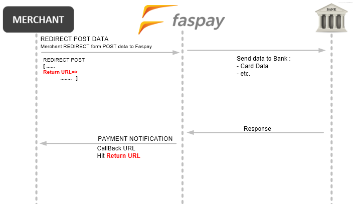
Alur Integrasi Faspay Credit
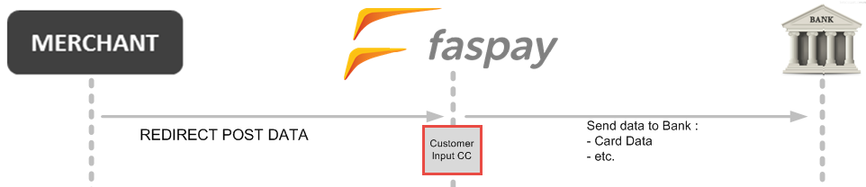
Alur untuk Penginputan Kartu Kredit di Sisi Faspay
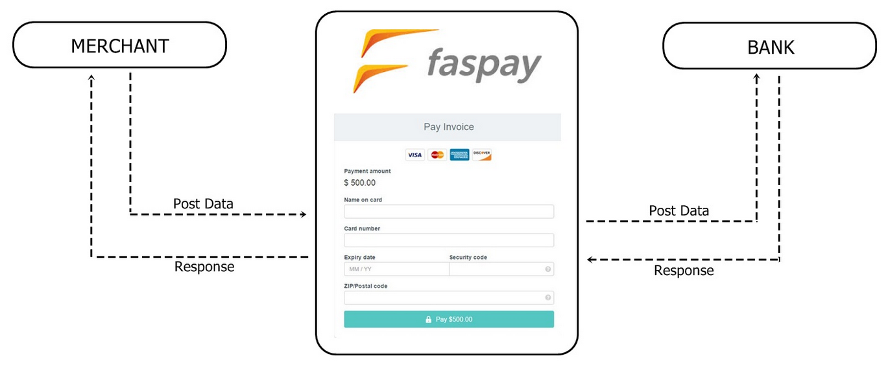
Customer mengisi data kartu kredit di Halaman website Faspay
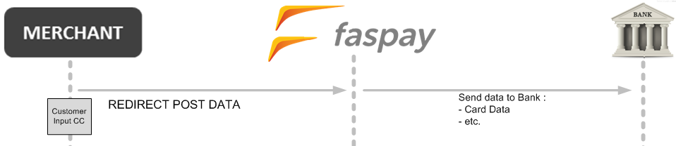
Alur Penginputan Kartu Kredit di Sisi Merchant
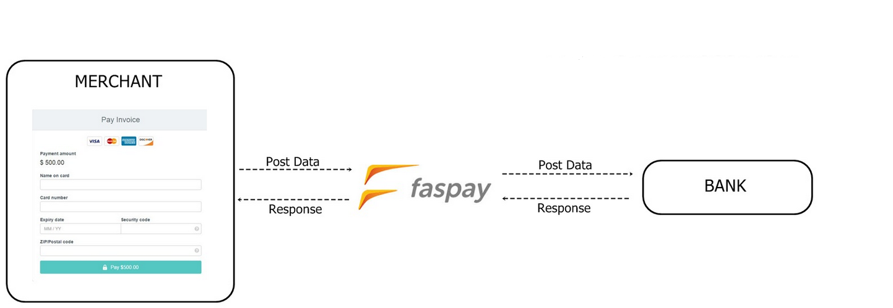
Customer mengisi data kartu kredit di halaman website merchant
URL Endpoint
URL Endpoint ini digunakan sebagai URL balikan yang akan memproses data yang di post dari system merchant. Terdapat 2 URL yang perlu digunakan yaitu Production dan Development. Untuk pelaksanaan testing atau UAT dapat menggunakan URL development.
| Integrasi Payment | Production | Development |
|---|---|---|
| Merchant Window API | https://uc.faspay.co.id/payment/PaymentWindow.jsp |
https://ucdev.faspay.co.id/payment/PaymentWindow.jsp |
| Merchant Direct API | https://uc.faspay.co.id/payment/PaymentInterface.jsp |
https://ucdev.faspay.co.id/payment/PaymentInterface.jsp |
Request Parameter
Code PHP untuk request integrasi dengan system Faspay.
<?php
$tranid = date("YmdGis");
$signaturecc =sha1('##'.strtoupper('cimb_itc').'##'
.strtoupper('ibnyw').'##'.$tranid.'##50000.00##'.'0'.'##');
$signaturecc1 = '##'.strtoupper('cimb_itc').'##'
.strtoupper('ibnyw').'##'.$tranid.'##50000.00##'.'0'.'##';
$post = array(
"LANG" => '',
"MERCHANTID" => 'cimb_itc', // yang diubah nama merchant
"PAYMENT_METHOD" => '1',
"TXN_PASSWORD" => 'ibnyw', //yang diubah hanya password
"MERCHANT_TRANID" => $tranid,
"CURRENCYCODE" => 'IDR',
"AMOUNT" => '50000.00',
"CUSTNAME" => 'hanna',
"CUSTEMAIL" => 'hanna.panjaitan@faspay.co.id',
"DESCRIPTION" => 'Buku',
"RETURN_URL" => 'http://localhost/cc/merchant_return_page.php',
"SIGNATURE" => $signaturecc,
"BILLING_ADDRESS" => '',
"BILLING_ADDRESS_CITY" => '',
"BILLING_ADDRESS_REGION" => '',
"BILLING_ADDRESS_STATE" => '',
"BILLING_ADDRESS_POSCODE" => '',
"BILLING_ADDRESS_COUNTRY_CODE" => '',
"RECEIVER_NAME_FOR_SHIPPING" => '',
"SHIPPING_ADDRESS" => '',
"SHIPPING_ADDRESS_CITY" => '',
"SHIPPING_ADDRESS_REGION" => '',
"SHIPPING_ADDRESS_STATE" => '',
"SHIPPING_ADDRESS_POSCODE" => '',
"SHIPPING_ADDRESS_COUNTRY_CODE" => '',
"SHIPPINGCOST" => '0.00',
"PHONE_NO" => '',
"MREF1" => '',
"MREF2" => '',
"MREF3" => '',
"MREF4" => '',
"MREF5" => '',
"MREF6" => '',
"MREF7" => '',
"MREF8" => '',
"MREF9" => '',
"MREF10" => '',
"MPARAM1" => '',
"MPARAM2" => '',
"CUSTOMER_REF" => '',
"PYMT_IND" => '',
"PYMT_CRITERIA" => '',
"FRISK1" => '',
"FRISK2" => '',
"DOMICILE_ADDRESS" => '',
"DOMICILE_ADDRESS_CITY" => '',
"DOMICILE_ADDRESS_REGION" => '',
"DOMICILE_ADDRESS_STATE" => '',
"DOMICILE_ADDRESS_POSCODE" => '',
"DOMICILE_ADDRESS_COUNTRY_CODE" => '',
"DOMICILE_PHONE_NO" => '',
"handshake_url" => '',
"handshake_param" => '',
);
/* $signaturenohash= '##'.strtoupper('cimb_itc').'##'.strtoupper('ibnyw').'##'
.$tranid.'##50000.00##'.'0'.'##';
echo "$signaturenohash";
var_dump($post);exit; */
$string = '<form method="post" name="form"
action="https://ucdev.faspay.co.id/payment/PaymentWindow.jsp">';
//yang diubah URLnya ke server prod atau server dev
if ($post != null) {
foreach ($post as $name=>$value) {
$string .= '<input type="hidden" name="'.$name.'" value="'.$value.'">';
}
}
$string .= '</form>';
$string .= '<script> document.form.submit();</script>';
echo $string;
exit;
?>
Request parameter merupakan parameter-parameter yang harus disediakan oleh system merchant untuk dapat integrasi dengan system Faspay.
| Field Name | Field Type | M/O/C | Description |
|---|---|---|---|
| PAYMENT_METHOD | Varchar(1) | Mandatory | For payment using credit/debit card, always set to 1. |
| TRANSACTIONTYPE | Varchar(2) | Mandatory | Indicate credit card payment model to use: 1 – Sales 3 – Authorize |
| MERCHANTID | Varchar (30) | Mandatory | Your Faspay e-Payment Merchant ID |
| MERCHANT_TRANID | Varchar(100) | Mandatory | Your own assigned unique ID for this transaction. |
| PYMT_IND | Varchar(20) | Optional | Specify the payment indicator to be used for this transaction. The payment indicator is used as the key identifier to set certain indication like card range to be processed. Certain card range of card can be processed. Ignore this parameter if there is not special requirement needed for the transaction. Note: PYMT_IND & PYMT_CRITERIA are to be in same sequence between the two parameters & each of the two parameters is to be separated by ‘;’ only. |
| PYMT_CRITERIA | Varchar(20) | Optional | Specify the payment criteria to be used, together with the parameter PYMT_IND. This criteria will be set one the payment indicator had been defined. Ignore this parameter if there is not special requirement needed for the transaction. Note: PYMT_IND & PYMT_CRITERIA are to be in same sequence between the two parameters & each of the two parameters is to be separated by ‘;’ only. |
| CURRENCYCODE | Varchar(3) | Mandatory | Indicate the currency of this transaction. Refer to Appendix I for Supported Currencies E.g. MYR, USD, SGD etc. |
| AMOUNT | Numeric | Mandatory | Amount of transaction. Supports up to 2 decimal points. E.g. amount is RM 52.50, set value as 52.50, amount is IDR 10000, set value as 10000.00 |
| SIGNATURE | Varchar(40) | Conditional | Transaction signature of request for data integrity check. Refer to Chapter 5 Transaction Signature for details. |
| CUSTNAME | Varchar(120) | Mandatory | Shopper’s name. |
| CUSTEMAIL | Varchar(100) | Mandatory | Shopper’s email address. |
| SHOPPER_IP | Varchar(15) | Mandatory | IP address of the customer. If customer is connecting via a proxy server, please make sure you can provide the actual IP address instead of the proxy server IP address. |
| DESCRIPTION | Varchar(100) | Optional | Short description of the order |
| RESPONSE_TYPE | Varchar(1) | Mandatory | Indicate how the system should provide the transaction result. Default Value = 1 1 – Return response via browser redirection, using HTTP GET method 2 – Return response via browser with hidden form submission, i.e. using HTTP POST method 3 - response parameters will be directly printed to stream with ‘;’ as separator for each response parameter (the sequence of the parameter may be different from one release to another, please do not rely on the sequence of parameter to process response) |
| RETURN_URL | Varchar(100) | Conditional | URL that page will be redirected with the transaction response after transaction has been processed. Merchant should translate the response parameter pass back to this URL and display user-friendly message to cardholder. This field is mandatory if ‘RESPONSE_TYPE’ is set to 1 or 2. |
| CARDNO | Varchar (20) | Mandatory | Shopper’s Credit Card number. Hanya untuk yang integrasinya mengunakan Merchant Direct API |
| CARDNAME | Varchar (100) | Mandatory | Name on the Credit Card. Hanya untuk yang integrasinya mengunakan Merchant Direct API |
| CARDTYPE | Char(1) | Mandatory | Indicates the card type used. MasterCard=M Visa=V JCB=J Amex=A Hanya untuk yang integrasinya mengunakan Merchant Direct API |
| EXPIRYMONTH | Char (2) | Mandatory | Use numeric representative of the month i.e. 01 - January 02 - February … 12 – December Hanya untuk yang integrasinya mengunakan Merchant Direct API |
| EXPIRYYEAR | Char(4) | Mandatory | Format of year should be YYYY i.e.2005, 2006 and etc. Hanya untuk yang integrasinya mengunakan Merchant Direct API |
| CARDCVC | Char(4) | Conditional | Card Verification Number (Last 3 digits located usually on the back of shopper’s credit card). This field can be optional if the Allow CVC field in Merchant Setting is disabled . Hanya untuk yang integrasinya mengunakan Merchant Direct API |
| CARD_ISSUER_BANK _COUNTRY_CODE |
Varchar (2) | Optional | Country of the credit card issuing bank |
| BILLING_ADDRESS | Varchar(200) | Optional | Shopper’s billing address |
| BILLING_ADDRESS _CITY |
Varchar(50) | Optional | Shopper’s billing city |
| BILLING_ADDRESS _REGION |
Varchar(100) | Optional | Shopper’s billing region |
| BILLING_ADDRESS _STATE |
Varchar(100) | Optional | Shopper’s billing state |
| BILLING_ADDRESS _POSCODE |
Varchar(10) | Optional | Shopper’s billing postcode |
| BILLING_ADDRESS _COUNTRY_CODE |
Varchar(10) | Optional | Shopper’s billing country code |
| RECEIVER_NAME _FOR_SHIPPING |
Varchar(100) | Optional | Name of person to receive goods at the shipping address provided. |
| SHIPPING_ADDRESS | Varchar(200) | Optional | Shopper’s shipping address |
| SHIPPING_ADDRESS _CITY |
Varchar(50) | Optional | Shopper’s shipping city |
| SHIPPING_ADDRESS _REGION |
Varchar(100) | Optional | Shopper’s shipping region |
| SHIPPING_ADDRESS _STATE |
Varchar(100) | Optional | Shopper’s shipping state |
| SHIPPING_ADDRESS _POSCODE |
Varchar(10) | Optional | Shopper’s shipping postcode |
| SHIPPING_ADDRESS _COUNTRY_CODE |
Varchar(10) | Optional | Shopper’s shipping country code |
| SHIPPINGCOST | Numeric | Optional | Amount of shipping cost. Supports up to 2 decimal point. E.g. amount is RM 52.50, set value as 52.50, amount is IDR 10000, set value as 10000. |
| PHONE_NO | Varchar(20) | Optional | Shopper’s phone number |
| MREF1 | Varchar(100) | Optional | Additional reference value for the transaction. This value will be stored and displayed as ‘Item Description 1’ on ‘Order Information’ page. |
| MREF2 | Varchar(100) | Optional | Additional reference value for the transaction. This value will be stored and displayed as ‘Item Description 2’ on ‘Order Information’ page. |
| MREF3 | Varchar(100) | Optional | Additional reference value for the transaction. This value will be stored and displayed as ‘Item Description 3’ on ‘Order Information’ page. |
| MREF4 | Varchar(100) | Optional | Additional reference value for the transaction. This value will be stored and displayed as ‘Item Description 4’ on ‘Order Information’ page. |
| MREF5 | Varchar(100) | Optional | Additional reference value for the transaction. This value will be stored and displayed as ‘Item Description 5’ on ‘Order Information’ page. |
| MREF6 | Varchar(100) | Optional | Additional reference value for the transaction. This value will be stored and displayed as ‘Item Description 6’ on ‘Order Information’ page. |
| MREF7 | Varchar(100) | Optional | Additional reference value for the transaction. This value will be stored and displayed as ‘Item Description 7’ on ‘Order Information’ page. Note: For merchant who is using Faspay’s receipt page, please submit the merchant’s URL to allow customers to click and redirect back to merchant’s website Example: https://www.mymerchantpage.com |
| MREF8 | Varchar(100) | Optional | Additional reference value for the transaction. This value will be stored and displayed as ‘Item Description 8’ on ‘Order Information’ page. |
| MREF9 | Varchar(100) | Optional | Additional reference value for the transaction. This value will be stored and displayed as ‘Item Description 9’ on ‘Order Information’ page. |
| MREF10 | Varchar(100) | Optional | Additional reference value for the transaction. This value will be stored and displayed as ‘Item Description 10’ on ‘Order Information’ page. Reserved for EPG. |
| MPARAM1 | Varchar(200) | Optional | Additional parameter the merchant wish to receive back as response for processing. This value is not stored by Faspay e-Payment. |
| MPARAM2 | Varchar(200) | Optional | Additional parameter the merchant wish to receive back as response for processing. This value is not stored by Faspay e-Payment. |
| CUSTOMER_REF | CUSTOMER_REF | Optional | Value that may be used by bank to refer to the transaction when liaising with customer. For credit card, this value will be passed to bank and display on cardholder’s statement if applicable. Actual value displayed may be truncated by bank. The length could be vary for different bank but cannot be more than the specified max value. |
| FRISK1 | Varchar(50) | Optional | Additional parameter that is passed to Fraud Detection System (FDS) |
| FRISK2 | Varchar(50) | Optional | Additional parameter that is passed to Fraud Detection System (FDS) |
| DOMICILE_ADDRESS | Varchar(200) | Optional | Shopper’s desirable contact address |
| DOMICILE_ADDRESS _CITY |
Varchar(50) | Optional | Shopper’s desirable contact city |
| DOMICILE_ADDRESS _REGION |
Varchar(100) | Optional | Shopper’s desirable contact region |
| DOMICILE_ADDRESS _STATE |
Varchar(100) | Optional | Shopper’s desirable contact state |
| DOMICILE_ADDRESS _POSCODE |
Varchar(10) | Optional | Shopper’s desirable contact postcode |
| DOMICILE_ADDRESS _COUNTRY_CODE |
Varchar(10) | Optional | Shopper’s desirable contact country code |
| DOMICILE_PHONE_NO | Varchar(20) | Optional | Shopper’s desirable contact phone number |
| handshake_url | Varchar(100) | Optional | If passed in, the handshake will use this as the return URL instead of the static URL in merchant profile. |
| handshake_param | Varchar(100) | Optional | Additional info to send back using the same field name. |
| CARD_ISSUER_BANK | Varchar (200) | Conditional | Issuer bank of credit card. This field is mandatory for 3rd party transaction only. However it will still be saved into database even though the transaction is not a 3rd party transaction. As follow existing behavior. |
| CARD_IDENTITY_REF_TYPE | VarChar(10) | Conditional | Type of identity document of the card holder. It can be either “IC” or “Passport” This field is mandatory for 3rd party transaction only. |
| CARD_IDENTITY_REF | VarChar(20) | Conditional | Reference number of the card holder’s identity document. This field is mandatory for 3rd party transaction only. |
| CARD_PHONE | VarChar(25) | Conditional | Card holder’s phone number. This field is mandatory for 3rd party transaction only. |
| CARD_BILL_ADDR | VarChar(200) | Conditional | Card holder’s billing address. |
| CARD_BILL_ADDR _POSCODE |
VarChar(10) | Conditional | Postcode of card holder’s billing address. This field is mandatory for 3rd party transaction only. |
| CARD_BILL_ADDR _CITY |
VarChar(100) | Conditional | City of card holder’s billing address. |
| CARD_BILL_ADDR _REGION |
VarChar(100) | Conditional | Region / district of card holder’s billing address. |
| CARD_BILL_ADDR _STATE |
VarChar(100) | Conditional | State / province of card holder’s billing address. |
| CARD_BILL_ADDR _COUNTRY_CODE |
VarChar(10) | Conditional | Country code of card holder’s billing address. This field is mandatory for 3rd party transaction only. |
| CARD_EMAIL | Varchar(100) | Conditional | Cardholder email address. This field is mandatory for 3rd party transaction only. |
Response Parameter
Code PHP untuk respon integrasi dengan system Faspay.
"PAYMENT_METHOD" => '1',
"MERCHANTID" => 'cimb_foodtaxi',
"MERCHANT_TRANID" => '2016/03/000072',
"ERR_CODE" => 0,
"ERR_DESC" => 'No error',
"USR_CODE" => 101,
"USR_MSG" => 'Transaction approved',
"TXN_STATUS" => 'A',
"CUSTNAME" => 'Hanna',
"DESCRIPTION" => 'DeWalt Standard Heatgun',
"EUI" => 'SUC',
"CURRENCYCODE" => 'IDR',
"AMOUNT" => '780000.00',
"SIGNATURE"
=> '387CF32EF09215C73011943F06CB44055CA3BE05',
"TRANSACTIONID" => 21536,
"TRANSACTIONTYPE" => 1,
"TRANDATE" => '04-03-2016 15:22:46',
"ACQUIRER_ID" => 'mandiri_test',
"MPARAM1" => '',
"MPARAM2" => '',
"IS_BLACKLISTED" => 'No',
"FRAUDRISKSCORE" => 75,
"FRAUDRISKLEVEL" => 2,
"EXCEED_HIGH_RISK" => 'Yes',
"CARDNAME" => 'test',
"CARD_NO_PARTIAL" => '413718xxxxxx3783',
"CARDTYPE" => 'V',
"is_on_us" => 'Yes',
"ACQUIRER_BANK" => 016,
"BANK_RES_CODE" => 00,
"BANK_RES_MSG" => 'APPROVED OR COMPLETED',
"AUTH_ID" => 657399,
"BANK_REFERENCE" => 10519,
"WHITELIST_CARD" => 'No'
Response parameter merupakan parameter-parameter yang akan dikirimkan oleh system Faspay sebagai respon atas request parameter yang sudah dikirimkan oleh system merchant. Jika ada parameter yang belum sesuai / nilainya salah maka transaksi tersebut akan di reject di sistem Faspay.
| Field Name | Field Type | M/O/C | Description |
|---|---|---|---|
| PAYMENT_METHOD | Varchar(1) | Mandatory | Indicates the payment mode used for this transaction. |
| MERCHANTID | Varchar (30) | Mandatory | Your Faspay e-Payment Merchant ID |
| MERCHANT_TRANID | Varchar(100) | Mandatory | Merchant’s own assigned transaction id as passed in from the request. |
| ERR_CODE | Varchar(10) | Mandatory | Error Code returns from Faspay e-Payment. If transaction is successful, this value will be 0. Any other value than 0 will indicate that the transaction is not successful. |
| ERR_DESC | Varchar(250) | Mandatory | Error description from Faspay e-Payment based on the ERR_CODE. |
| USR_CODE | Varchar(4) | Conditional | User Code returns from Faspay e-Payment. A user code will be used to indicate the appropriate action to be taken by shopper according to different bank response code obtained. In the case of pending status, this value is will an empty value |
| USR_MSG | Varchar(200) | Conditional | User Message returns from Faspay e-Payment. A user message will be used to indicate the appropriate action to be taken by shopper according to different bank response code obtained. In the case of pending status, this value is will an empty value |
| TXN_STATUS | Varchar(3) | Mandatory | Transaction status from Faspay e-Payment. Please refer to Appendix B for full list of transaction status. A – Authorized S – Sales F – Not approved E – Error B – Blocked RC – Reconfirm N – Pending I –Incomplete This value must be stored and it’s the indication whether the transaction is successful, declined or error. |
| DESCRIPTION | Varchar(100) | Optional | Transaction description as passed in from the request. |
| CURRENCYCODE | Varchar(3) | Mandatory | Indicate the currency of this transaction. Refer to Appendix I for Supported Currencies E.g. MYR, USD, SGD etc. |
| AMOUNT | Numeric(10) | Mandatory | Transaction amount as passed in from the request. |
| SIGNATURE | Varchar(40) | Mandatory | Transaction signature of response for data integrity checking. Refer to Chapter 5 Transaction Signature for details. |
| EUI | Varchar(3) | Mandatory | End User Indicator (EUI) is use to help merchant determine the response to display on merchant return URL. Please refer to Appendix section for further details. SUC = Success RTY = Retry/Failed ALT = Alert NA = Not Applicable |
| TRANSACTIONID | Integer | Mandatory | Faspay e-Payment assigned transaction id if the transaction was stored. This value must be stored and used as reference value to retrieve the transaction from Faspay e-Payment. In the event that if the request parameters are invalid, the transaction is rejected and not stored, this value will be 0. |
| TRANDATE | Varchar (19) | Conditional | Transaction date of when transaction is submitted to Faspay e-Payment. Date format in ‘DD-MM-YYYY hh:mm:ss’ e.g. 24-05-2006 08:24:23 In the event of error, this field may be empty. |
| TRANSACTIONTYPE | Varchar(2) | Mandatory | Return transaction type corresponding to the original request |
| IS_BLACKLISTED | Varchar(5) | Conditional | Indicate whether the transaction is blacklisted. Value is ‘Yes’ or ‘No’ In the event of error, this field may be empty. |
| FRAUDRISKLEVEL | Integer | Conditional | Indicate fraud risk level. Value as follow: -1 : Error or not in used. 0 – Very low risk 1 – Low risk 2 – Medium risk 3 – High risk 4 – Very high risk In the event of error, this field may be empty. |
| EXCEED_HIGH_RISK | Varchar(3) | Conditional | Indicate whether the transaction fraud score exceed the threshold value set for high risk in merchant setting. Possible value are: Yes = Transaction fraud risk exceed merchant high risk threshold No = Transaction fraud risk fall bellows the merchant high risk threshold NA = Not Applicable (fraud score not available) In the event of error, this field may be empty. |
| CARDNAME | Varchar(100) | Mandatory | Name on the Credit Card. Hanya untuk yang integrasinya mengunakan Merchant Direct API |
| CARDTYPE | Char(1) | Mandatory | Indicates the card type used. MasterCard=M Visa=V JCB=J AMEX=A Hanya untuk yang integrasinya mengunakan Merchant Direct API |
| CARD_NO_PARTIAL | Varchar(20) | Conditional | Returns first 6 and last 4 digits of credit card. E.g.: 455555XXXXXX1234 In the event of error, this field may be empty. Hanya untuk yang integrasinya menggunakan Merchant Direct API |
| ACQUIRER_BANK | Varchar(3) | Conditional | Acquiring bank that processed this credit card transaction. Coded value. Please refer to Appendix. This parameter will only have value if the transaction request fulfills all the mandatory parameters and passes all parameters validation checking in Faspay e-Payment server. It will be empty also if Faspay e-Payment server does not send in the transaction to any bank. This may happen, in few possible cases like, Faspay e-Payment server cannot find any suitable acquirer setup to process the transaction, or the transaction is blocked based on merchant settings. |
| BANK_RES_CODE | Varchar(20) | Conditional | Response code or error code from bank. In the event of error, this field may be empty. |
| BANK_RES_MSG | Varchar(250) | Conditional | Bank description on the response based on BANK_RES_CODE. In the event of error, this field may be empty. |
| AUTH_ID | Varchar(20) | Conditional | Bank approval code (if transaction is approved). If transaction is declined or error, this parameter will be empty. |
| MPARAM1 | Varchar(200) | Optional | Additional parameter as what is passed in request. This value is not stored by Faspay e-Payment. |
| MPARAM2 | Varchar(200) | Optional | Additional parameter as what is passed in request. This value is not stored by Faspay e-Payment |
| WHITELIST_CARD | Varchar(3) | Conditional | Indicate whether the transaction is use whitelist card. Value is ‘Yes’ or ‘No’ |
| CUSTNAME | Varchar(120) | Mandatory | Shopper’s name. |
| ACQUIRER_ID | VarcharI(30) | Optional | Your Faspay e-Payment Acquirer ID |
| is_on_us | Varchar(3) | Mandatory | Indicate whether the transaction is using on us card. Value is ‘Yes’ or ‘No’ |
| Field Name | Field Type | Description |
|---|---|---|
| BANK_REFERENCE | Varchar(100) | Reference value from bank (if transaction is approved). If transaction hit error, this parameter may be empty. |
Integration API Tambahan
Integrasi API tambahan merupakan beberapa fitur tambahan yang diberikan Faspay untuk kemudahan merchant dalam mengelola transaksinya.
Inquiry Payment Status
Inquiry payment status dilakukan oleh merchant untuk melakukan pengecekan status transaksi cusstomer di terima (accept) atau di tolak (reject) oleh API faspay dan mengetahui status terakhir transaksi tersebut. Terdapat 2 URL yang perlu digunakan yaitu Production dan Development. Untuk pelaksanaan testing atau UAT dapat menggunakan URL development.
| Production | Development |
|---|---|
https://uc.faspay.co.id/payment/PaymentWindow.jsp |
https://uc.faspay.co.id/payment/PaymentWindow.jsp |
Inquiry Request Parameter
Code PHP untuk inquiry request payment status dengan system Faspay.
<?php
$postdata = array(
'TRANSACTIONTYPE' => 4,
'MERCHANTID' => 'cimb_nutrimart',
'MERCHANT_TRANID' => '1000135',
'AMOUNT' => '151800',
'RESPONSE_TYPE' => 3,
'SIGNATURE' => '58B2DA43C7C406B1EACC3E85BFA169DE4D041E89'
);
$post = http_build_query($postdata);
$url = "https://ucdev.faspay.co.id/payment/PaymentInterface.jsp";
$ch = curl_init();
curl_setopt($ch, CURLOPT_CONNECTTIMEOUT, 30);
curl_setopt($ch, CURLOPT_URL, $url);
curl_setopt($ch, CURLOPT_HEADER, 0);
curl_setopt($ch, CURLOPT_POST, true);
curl_setopt($ch, CURLOPT_SSL_VERIFYHOST, 0);
curl_setopt($ch, CURLOPT_SSL_VERIFYPEER, 0);
curl_setopt($ch, CURLOPT_FOLLOWLOCATION, 1);
curl_setopt($ch, CURLOPT_POSTFIELDS, $post);
curl_setopt($ch, CURLOPT_RETURNTRANSFER, 1);
$result = curl_exec($ch);
print_r($result);
curl_close($ch);
?>
Request parameter merupakan parameter-parameter yang harus disediakan oleh system merchant untuk dapat inquiry payment status dengan system Faspay.
| Field Name | Field Type | M/O/C | Description |
|---|---|---|---|
| TRANSACTIONTYPE | Varchar(2) | Mandatory | For query API, always used value ‘4’. |
| MERCHANTID | Varchar (30) | Mandatory | Your Faspay e-Payment Merchant ID |
| MERCHANT_TRANID | Varchar(100) | Mandatory | Your own assigned unique ID for transaction. The value must match the original value submitted in; otherwise the request will be rejected with error. |
| AMOUNT | Numeric | Mandatory | Original amount of transaction. Supports up to 2 decimal point. E.g., amount is RM 52.50, pass in the value as 52.50, amount is IDR 10000, pass in as 10000.00. The value must match the original amount submitted in; otherwise the request will be rejected with error. |
| RESPONSE_TYPE | Varchar(1) | Mandatory | Indicate how the system should provide the transaction result. Please always use the value ‘3’ for Query API. The response parameters will be directly printed to stream with ‘;’ as separator for each response parameter. The sequence of the parameter may be different from one release to another, please do not rely on the sequence of parameter to process response. |
| SIGNATURE | Varchar(40) | Conditional | Transaction signature of request for data integrity check. Refer to Chapter 5 Transaction Signature for details. |
Response Parameter Inquiry Payment Status
Response parameter inquiry payment status merupakan parameter-parameter yang akan dikirimkan oleh system Faspay sebagai respon atas request parameter inquiry payment status yang sudah dikirimkan oleh system merchant. Jika ada parameter yang belum sesuai / nilainya salah maka transaksi tersebut akan di reject di sistem Faspay.
| Field Name | Field Type | M/O/C | Description |
|---|---|---|---|
| PAYMENT_METHOD | Varchar(1) | Conditional | Indicates the payment mode used for this transaction. In the event of error, this field may be empty. |
| MERCHANTID | Varchar (30) | Mandatory | Your Faspay e-Payment Merchant ID |
| MERCHANT_TRANID | Varchar(100) | Mandatory | Merchant’s own assigned transaction id as passed in from the request. |
| TRANSACTIONID | Integer | Mandatory | Faspay e-Payment assigned transaction id if the transaction was stored. This value must be stored and used as reference value to retrieve the transaction from Faspay e-Payment. In the event that if the request parameters are invalid, the transaction is rejected and not stored, this value will be 0. |
| TRANDATE | Varchar (19) | Conditional | Transaction date of when transaction is submitted to Faspay e-Payment. Date format in ‘DD-MM-YYYY hh:mm:ss’ e.g. 24-05-2006 08:24:23 In the event of error, this field may be empty. |
| ERR_CODE | Varchar(10) | Mandatory | Error Code returns from Faspay e-Payment. If transaction is successful, this value will be 0. Any other value than 0 will indicate that the transaction is not successful. |
| ERR_DESC | Varchar(250) | Mandatory | Error description from Faspay e-Payment based on the ERR_CODE. |
| TXN_STATUS | Varchar(3) | Mandatory | Transaction status from Faspay e-Payment. Please refer to Appendix B for full list of transaction status. A – Authorized (for authorized request) S – Sales (for sales request) F – Not approved E – Error B – Blocked RC – Reconfirm N – Pending I – Incomplete This value must be stored and it’s the indication whether the transaction is successful, declined or error. |
| CUSTNAME | Varchar(120) | Conditional | Shopper’s name. In the event of error, this field may be empty. |
| DESCRIPTION | Varchar(100) | Optional | Transaction description as passed in from the request. |
| CURRENCYCODE | Varchar(3) | Conditional | Indicate the currency of this transaction. Refer to Appendix I for Supported Currencies. E.g. MYR, USD, SGD etc. In the event of error, this field may be empty. |
| AMOUNT | Numeric(10) | Mandatory | Transaction amount as passed in from the request. |
| SIGNATURE | Varchar(40) | Mandatory | Transaction signature of response for data integrity checking. Refer to Chapter 5 Transaction Signature for details. |
| IS_BLACKLISTED | Varchar(5) | Conditional | Indicate whether the transaction is blacklisted. Value is ‘Yes’ or ‘No’ In the event of error, this field may be empty. |
| FRAUDRISKLEVEL | Integer | Conditional | Indicate fraud risk level. Value as follow: -1 : Error or not in used. 0 – Very low risk 1 – Low risk 2 – Medium risk 3 – High risk 4 – Very high risk In the event of error, this field may be empty. |
| FRAUDRISKSCORE | Numeric | Conditional | Fraud risk score in two decimal values. In the event of error, this field may be empty. |
| EUI | Varchar(3) | Optional | End User Indicator (EUI) is use to help merchant determine the response to display on merchant return URL. Please refer to Appendix section for further details. SUC = Success RTY = Retry/Failed ALT = Alert NA = Not Applicable |
| EXCEED_HIGH_RISK | Varchar(3) | Conditional | Indicate whether the transaction fraud score exceed the threshold value set for high risk in merchant setting. Possible value are: Yes = Transaction fraud risk exceed merchant high risk threshold No = Transaction fraud risk fall bellows the merchant high risk threshold NA = Not Applicable (fraud score not available) In the event of error, this field may be empty. |
| TRANSACTIONTYPE | Varchar(2) | Mandatory | Return transaction type as passed in from request. |
| ACQUIRER_ID | VarcharI(30) | Optional | Your Faspay e-Payment Acquirer ID |
| TOTAL_REFUND_AMOUNT | Numeric(10) | Mandatory | The total of refund amount that already done for the transaction. If the transaction not doing any refund, will return 0. |
| CARDNAME | Varchar(100) | Conditional | Name on the Credit Card. In the event of error, this field may be empty. |
| CARDTYPE | Varchar(1) | Conditional | Indicate card type used. MasterCard = M Visa = V In the event of error, this field may be empty. |
| CARD_NO_PARTIAL | Varchar(20) | Conditional | Returns first 6 and last 4 digits of credit card. E.g.: 455555XXXXXX1234 In the event of error, this field may be empty. |
| ACQUIRER_BANK | Varchar(3) | Conditional | Acquiring bank that processed this credit card transaction. Coded value. Please refer to Appendix. This parameter will only have value if the transaction request fulfills all the mandatory parameters and passes all parameters validation checking in Faspay e-Payment server. It will be empty also if Faspay e-Payment server does not send in the transaction to any bank. This may happen, in few possible cases like, Faspay e-Payment server cannot find any suitable acquirer setup to process the transaction, or the transaction is blocked based on merchant settings. |
| BANK_RES_CODE | Varchar(20) | Conditional | Response code or error code from bank. In the event of error, this field may be empty. |
| BANK_RES_MSG | Varchar(250) | Conditional | Bank description on the response based on BANK_RES_CODE. In the event of error, this field may be empty. |
| AUTH_ID | Varchar(20) | Optional | Bank approval code (if transaction is approved). If transaction is declined or error, this parameter will be empty. |
| BANK_REFERENCE | Varchar(100) | Optional | Reference value from bank (if transaction is approved). If transaction hit error, this parameter may be empty. |
| is_on_us | Varchar(3) | Mandatory | Indicate whether the transaction is using on us card. Value is ‘Yes’ or ‘No’ |
| CAPTURE_DATE | Varchar (19) | Conditional | Transaction date of when transaction is captured in Faspay e-Payment. Date format in ‘DD-MM-YYYY hh:mm:ss’ e.g. 24-05-2006 08:24:23 This parameter will only be provided if transaction status is successfully captured. |
| REFUND_DATE | Varchar (19) | Conditional | Transaction date of when transaction is last refunded in Faspay e-Payment. Date format in ‘DD-MM-YYYY hh:mm:ss’ e.g. 24-05-2006 08:24:23 This parameter will only be provided if transaction status is successfully refunded. |
| WHITELIST_CARD | Varchar(3) | Conditional | Indicate whether the transaction is use whitelist card. Value is ‘Yes’ or ‘No’ |
| PYMT_TOKEN | Varchar(200) | Conditional | The token to be used for retrieving credit card details in Tokenization Payment. |
Capture Transaction
Capture transaction artinya user menyetujui / approve transaksi kartu kredit yang telah di verifikasi bank (transaksi authorize), merchant kemudian mengirimkan permintaan untuk capture transaksi untuk menerima dan menagih pembayaran tersebut kepada customer yang terdaftar pada kartu kredit yang digunakan. Permintaan capture hanya dapat dilakukan untuk transaksi yang sudah di authorize oleh bank (field TXN_STATUS = A). Pada beberapa bank sudah menyediakan layanan untuk otomatisasi proses capture yang dapat di set sesuai dengan permintaan merchant.
Request Parameter Capture Transaction
Request parameter capture transaction merupakan parameter-parameter yang harus disediakan oleh system merchant untuk dapat mengcapture transaksi lewat system Faspay.
| Field Name | Field Type | M/O/C | Description |
|---|---|---|---|
| PAYMENT_METHOD | Varchar(1) | Mandatory | Indicate payment method used. Always used value ‘1’ for credit card payment. |
| TRANSACTIONTYPE | Varchar(2) | Mandatory | For credit card capture API, always used value ‘2’. |
| MERCHANTID | Varchar (30) | Mandatory | Your Faspay e-Payment Merchant ID |
| MERCHANT_TRANID | Varchar(100) | Mandatory | Your own assigned unique ID for transaction. The value must match the original value submitted in; otherwise the request will be rejected with error. |
| TRANSACTIONID | Integer | Mandatory | Faspay e-Payment assigned transaction id during authorization request. |
| AMOUNT | Numeric | Mandatory | Original amount of transaction. Supports up to 2 decimal point. E.g. for RM 52.50, pass in value as 52.50, for IDR 10000, pass in value as 10000.00. The value must match the original amount submitted in; otherwise the request will be rejected with error. |
| RESPONSE_TYPE | Varchar(1) | Mandatory | Indicate how the system should provide the transaction result. Please always use the value ‘3’ for Credit Card capture API. The response parameters will be directly printed to stream with ‘;’ as separator for each response parameter. The sequence of the parameter may be different from one release to another, please do not rely on the sequence of parameter to process response. |
| SIGNATURE | Varchar(40) | Varchar(40) | Transaction signature of request for data integrity check. Refer to Chapter 5 Transaction Signature for details. |
| MREF1 | Varchar(100) | Optional | Additional reference value for the transaction. If value pass is different from the original value pass in during authorization request, the new value will overwrite the existing value. This value will be stored and displayed as ‘Item Description 1’ on ‘Order Information’ page. |
| MREF2 | Varchar(100) | Optional | Additional reference value for the transaction. If value pass is different from the original value pass in during authorization request, the new value will overwrite the existing value. This value will be stored and displayed as ‘Item Description 2’ on ‘Order Information’ page. |
| MREF3 | Varchar(100) | Optional | Additional reference value for the transaction. If value pass is different from the original value pass in during authorization request, the new value will overwrite the existing value. This value will be stored and displayed as ‘Item Description 3’ on ‘Order Information’ page. |
| MREF4 | Varchar(100) | Optional | Additional reference value for the transaction. If value pass is different from the original value pass in during authorization request, the new value will overwrite the existing value. This value will be stored and displayed as ‘Item Description 4’ on ‘Order’ Information’ page |
| MREF5 | Varchar(100) | Optiona | Additional reference value for the transaction. If value pass is different from the original value pass in during authorization request, the new value will overwrite the existing value. This value will be stored and displayed as ‘Item Description 5’ on ‘Order Information’ page. |
| MREF6 | Varchar(100) | Optiona | Additional reference value for the transaction. If value pass is different from the original value pass in during authorization request, the new value will overwrite the existing value. This value will be stored and displayed as ‘Item Description 6’ on ‘Order Information’ page |
| MREF7 | Varchar(100) | Optiona | Additional reference value for the transaction. If value pass is different from the original value pass in during authorization request, the new value will overwrite the existing value. This value will be stored and displayed as ‘Item Description 7’ on ‘Order Information’ page |
| MREF8 | Varchar(100) | Optiona | Additional reference value for the transaction. If value pass is different from the original value pass in during authorization request, the new value will overwrite the existing value. This value will be stored and displayed as ‘Item Description 8’ on ‘Order Information’ page |
| MREF9 | Varchar(100) | Optiona | Additional reference value for the transaction. If value pass is different from the original value pass in during authorization request, the new value will overwrite the existing value. This value will be stored and displayed as ‘Item Description 9’ on ‘Order Information’ page |
| MREF10 | Varchar(100) | Optiona | Additional reference value for the transaction. If value pass is different from the original value pass in during authorization request, the new value will overwrite the existing value. This value will be stored and displayed as ‘Item Description 10’ on ‘Order Information’ page. Reserved for EPG. |
Response Parameter Capture Transaction
Response parameter capture transaction merupakan parameter-parameter yang akan dikirimkan oleh system Faspay sebagai respon atas request parameter capture transaction yang sudah dikirimkan oleh system merchant. Jika ada parameter yang belum sesuai / nilainya salah maka transaksi tersebut akan di reject di sistem Faspay.
| Field Name | Field Type | M/O/C | Description |
|---|---|---|---|
| PAYMENT_METHOD | Varchar (1) | Mandatory | Indicate payment method used. For credit card payment, value ‘1’ is returned. |
| TRANSACTIONTYPE | Varchar(2) | Mandatory | Return transaction type as passed in from request. |
| MERCHANTID | Varchar (30) | Mandatory | Your Faspay e-Payment Merchant ID |
| MERCHANT_TRANID | Varchar(100) | Mandatory | Merchant’s own assigned transaction id |
| ERR_CODE | Varchar(10) | Mandatory | Error Code returns from Faspay e-Payment. If transaction is successful, this value will be 0. Any other value than 0 will indicate that the transaction is not successful. |
| ERR_DESC | Varchar(250) | Mandatory | Error description from Faspay e-Payment based on the ERR_CODE |
| USR_CODE | Varchar(4) | Conditional | User Code returns from Faspay e-Payment. A user code will be used to indicate the appropriate action to be taken by shopper according to different bank response code obtained. In the case of pending status, this value is will an empty value |
| USR_MSG | Varchar(200) | Conditional | User Message returns from Faspay e-Payment. A user message will be used to indicate the appropriate action to be taken by shopper according to different bank response code obtained. In the case of pending status, this value is will an empty value |
| TXN_STATUS | Varchar(2) | Mandatory | Transaction status. Please refer to Appendix B for full list of transaction status. For capture request, the possible status returned only include following: C – Capture successfully CF – capture failed |
| AMOUNT | Numeric | Mandatory | Transaction amount as passed in from the request. |
| TRANSACTIONID | Integer | Mandatory | Faspay e-Payment’s assigned transaction id. In the event of error, this field may be returned as 0. |
| SIGNATURE | Varchar(40) | Mandatory | Transaction signature of response for data integrity check. Refer to Chapter 5 Transaction Signature for details. |
| ACQUIRER_ID | Varchar(30) | Optional | Your Faspay e-Payment Acquirer ID |
| is_on_us | Varchar(3) | Mandatory | Indicate whether the transaction is using on us card. Value is ‘Yes’ or ‘No’ |
| BANK_RES_MSG | Varchar(50) | Optional | Bank description on the capture request. |
| CAPTURE_DATE | Varchar (19) | Conditional | Transaction date of when transaction is captured in Faspay e-Payment. Date format in ‘DD-MM-YYYY hh:mm:ss’ e.g. 24-05-2006 08:24:23 This parameter will only be provided if transaction status is successfully captured. |
Transaction Void
Transaction void artinya user menolak / reject transaksi atau biasa dikenal juga sebagai reversal, proses void bisa dilakukan secara online atau offline tergantung dari layanan masing masing bank. Reversal dilakukan pada hari yang sama sebelum waktu cut off yang ditetapkan oleh bank, contohnya jika cut off transaksi pukul 20.00 malam maka proses void yang dilakukan dibawah jam tersebut akan di terima akan tetapi jika proses void dilakukan setelah waktu cut off bank maka faspay akan memberikan informasi notifikasi kepada merchant bahwa void tersebut gagal dengan kode 5621 (Void ditolak bank).
Request Parameter Transaction Void
Request parameter transaction void merupakan parameter-parameter yang harus disediakan oleh system merchant untuk dapat melakukan transaksi void lewat system Faspay.
| Field Name | Field Type | M/O/C | Description |
|---|---|---|---|
| PAYMENT_METHOD | Varchar(1) | Mandatory | Indicate payment method used. Always used value ‘1’ for credit card payment. |
| TRANSACTIONTYPE | Varchar(2) | Mandatory | For credit card void API, always used value ‘10’. |
| MERCHANTID | Varchar (30) | Mandatory | Your Faspay e-Payment Merchant ID |
| MERCHANT_TRANID | Varchar(100) | Mandatory | Your own assigned unique ID for transaction. The value must match the original value submitted in; otherwise the request will be rejected with error. |
| TRANSACTIONID | Integer | Mandatory | Faspay e-Payment assigned transaction id during authorization request. |
| AMOUNT | Numeric | Mandatory | Original amount of transaction. Supports up to 2 decimal point. E.g. for RM 52.50, pass in value as 52.50, for IDR 10000, pass in value as 10000.00. The value must match the original amount submitted in; otherwise the request will be rejected with error. |
| RESPONSE_TYPE | Varchar(1) | Mandatory | Indicate how the system should provide the transaction result. Please always use the value ‘3’ for Credit Card void API. The response parameters will be directly printed to stream with ‘;’ as separator for each response parameter. The sequence of the parameter may be different from one release to another, please do not rely on the sequence of parameter to process response. |
| SIGNATURE | Varchar(40) | Mandatory | Transaction signature of request for data integrity check. Refer to Chapter 5 Transaction Signature for details. |
Response Parameter Transaction Void
Response parameter transaction void merupakan parameter-parameter yang akan dikirimkan oleh system Faspay sebagai respon atas request parameter transaction void yang sudah dikirimkan oleh system merchant. Jika ada parameter yang belum sesuai / nilainya salah maka transaksi tersebut akan di reject di sistem Faspay.
| Field Name | Field Type | M/O/C | Description |
|---|---|---|---|
| PAYMENT_METHOD | Varchar (1) | Mandatory | Indicate payment method used. For credit card payment, value ‘1’ is returned |
| TRANSACTIONTYPE | Varchar(2) | Mandatory | Return transaction type as passed in from request |
| MERCHANTID | Varchar (30) | Mandatory | Your Faspay e-Payment Merchant ID |
| MERCHANT_TRANID | Varchar(100) | Mandatory | Merchant’s own assigned transaction id |
| ERR_CODE | Varchar(10) | Mandatory | Error Code returns from Faspay e-Payment. If transaction is successful, this value will be 0. Any other value than 0 will indicate that the transaction is not successful |
| ERR_DESC | Varchar(250) | Mandatory | Error description from Faspay e-Payment based on the ERR_CODE. |
| USR_CODE | Varchar(4) | Conditional | User Code returns from Faspay e-Payment. A user code will be used to indicate the appropriate action to be taken by shopper according to different bank response code obtained. In the case of pending status, this value is will an empty value |
| USR_MSG | Varchar(200) | Conditional | User Message returns from Faspay e-Payment. A user message will be used to indicate the appropriate action to be taken by shopper according to different bank response code obtained. In the case of pending status, this value is will an empty value |
| TXN_STATUS | Varchar(2) | Mandatory | Transaction status. Please refer to Appendix B for full list of transaction status. For Void API, the possible status returned include following: V – Status adjusted to ‘Void’ E – Error occurred. Check ERR_CODE and ERR_DESC The txn_status in system shall remain as the original status prior to sending for void. The TXN_STATUS “E” in this response is just to indicate the result of the void request |
| AMOUNT | Numeric | Mandatory | Transaction amount as passed in from the request. |
| TRANSACTIONID | Integer | Mandatory | Faspay e-Payment’s assigned transaction id. In the event of error, this field may be returned as 0. |
| SIGNATURE | Varchar(40) | Mandatory | Transaction signature of response for data integrity check. Refer to Chapter 5 Transaction Signature for details. |
| ACQUIRER_ID | VarcharI(30) | Optional | Your Faspay e-Payment Acquirer ID |
| is_on_us | Varchar(3) | Mandatory | Indicate whether the transaction is using on us card. Value is ‘Yes’ or ‘No’ |
Transaction Refund
Transaction refund artinya user meminta mengembalikan dana untuk transaksi yang sudah selesai. Untuk mengaktifkan fitur refund ini pastikan dahulu acquiring bank yang digunakan sudah mendukung proses refund dan bank tersebut sudah terintegrasi dengan faspay. Permintaan refund hanya dapat dilakukan untuk transaksi yang sudah Capture atau Sales (TXN_STATUS = C atau S).
Request Parameter Transaction Refund
Request parameter transaction refund merupakan parameter-parameter yang harus disediakan oleh system merchant untuk dapat melakukan transaksi void lewat system Faspay.
| Field Name | Field Type | M/O/C | Description |
|---|---|---|---|
| PAYMENT_METHOD | Varchar(1) | Mandatory | Indicate payment method used. Always used value ‘1’ for credit card payment. |
| TRANSACTIONTYPE | Varchar(2) | Mandatory | For credit card adjust status API, always used value ‘11’ |
| MERCHANTID | Varchar (30) | Mandatory | Your Faspay e-Payment Merchant ID |
| MERCHANT_TRANID | Varchar(100) | Mandatory | Your own assigned unique ID for transaction. The value must match the original value submitted in; otherwise the request will be rejected with error. |
| TRANSACTIONID | Integer | Mandatory | Faspay e-Payment assigned transaction id during authorization request |
| AMOUNT | Numeric | Mandatory | Original amount of transaction. Supports up to 2 decimal point. E.g. for RM 52.50, pass in value as 52.50, for IDR 10000, pass in value as 10000.00. The value must match the original amount submitted in; otherwise the request will be rejected with error |
| REFUND_AMOUNT | Numeric | Mandatory | The amount to refund the transaction. The value must equal or less than original amount. |
| RESPONSE_TYPE | Varchar(1) | Mandatory | Indicate how the system should provide the transaction result. Please always use the value ‘3’ for Credit Card refund API. The response parameters will be directly printed to stream with ‘;’ as separator for each response parameter. The sequence of the parameter may be different from one release to another, please do not rely on the sequence of parameter to process response. |
| SIGNATURE | Varchar(40) | Mandatory | Transaction signature of request for data integrity check. Refer to Chapter 5 Transaction Signature for details. |
Response Parameter Transaction Refund
Response parameter transaction refund merupakan parameter-parameter yang akan dikirimkan oleh system Faspay sebagai respon atas request parameter transaction refund yang sudah dikirimkan oleh system merchant. Jika ada parameter yang belum sesuai / nilainya salah maka transaksi tersebut akan di reject di sistem Faspay.
| Field Name | Field Type | M/O/C | Description |
|---|---|---|---|
| PAYMENT_METHOD | Varchar (1) | Mandatory | Indicate payment method used. For credit card payment, value ‘1’ is returned. |
| TRANSACTIONTYPE | Varchar(2) | Mandatory | Return transaction type as passed in from request. |
| MERCHANTID | Varchar (30) | Mandatory | Your Faspay e-Payment Merchant ID |
| MERCHANT_TRANID | Varchar(100) | Mandatory | Merchant’s own assigned transaction id |
| ERR_CODE | Varchar(10) | Mandatory | Error Code returns from Faspay e-Payment. If transaction is successful, this value will be 0. Any other value than 0 will indicate that the transaction is not successful. |
| ERR_DESC | Varchar(250) | Mandatory | Error description from Faspay e-Payment based on the ERR_CODE. |
| USR_CODE | Varchar(4) | Conditional | User Code returns from Faspay e-Payment. A user code will be used to indicate the appropriate action to be taken by shopper according to different bank response code obtained. In the case of pending status, this value is will an empty value |
| USR_MSG | Varchar(200) | Conditional | User Message returns from Faspay e-Payment. A user message will be used to indicate the appropriate action to be taken by shopper according to different bank response code obtained. In the case of pending status, this value is will an empty value |
| TXN_STATUS | Varchar(2) | Mandatory | Transaction status. Please refer to Appendix B for full list of transaction status.For refund request, the transaction status will remain C – Capture successfully / S - Sale |
| AMOUNT | Numeric | Mandatory | Transaction amount as passed in from the request. |
| TRANSACTIONID | Integer | Mandatory | Faspay e-Payment’s assigned transaction id. In the event of error, this field may be returned as 0. |
| SIGNATURE | Varchar(40) | Mandatory | Transaction signature of response for data integrity check. Refer to Chapter 5 Transaction Signature for details. |
| ACQUIRER_ID | VarcharI(30) | Optional | Your Faspay e-Payment Acquirer ID |
| REFUND_DATE | Varchar (19) | Conditional | Transaction date of when transaction is refunded in Faspay e-Payment. Date format in ‘DD-MM-YYYY hh:mm:ss’ e.g. 24-05-2006 08:24:23. This parameter will only be provided if transaction status is successfully refunded. |
| REFUND_AMOUNT | Numeric | Mandatory | Transaction refund amount as passed in from the request. |
| TOTAL_REFUND_AMOUNT | Numeric | Mandatory | The total of refund amount that already done for the transaction. If the transaction not doing any refund, will return 0. |
| BANK_RES_CODE | Varchar(20) | Conditional | Response code or error code from bank. In the event of error, this field may be empty. |
| BANK_RES_MSG | Varchar(250) | Conditional | Bank description on the response based on BANK_RES_CODE. In the event of error, this field may be empty. |
Update Transaction Status
Update transaction status digunakan apabila merchant akan melakukan update data transaksi dengan kartu kredit yang berstatus CF (Capture Failed) dan CRC (Capture Reconfirm) setelah status transaksi tersebut gagal merchant dapat mengirimkan request untuk mengupdate status transaksi tersebut kembali menjadi status authorize.
Request Parameter Update Transaction Status
Request parameter update transaction status merupakan parameter-parameter yang harus disediakan oleh system merchant untuk dapat melakukan transaksi void lewat system Faspay.
| Field Name | Field Type | M/O/C | Description |
|---|---|---|---|
| PAYMENT_METHOD | Varchar(1) | Mandatory | Indicate payment method used. Always use value ‘1’ for credit card payment. *Currently support credit card payment only |
| TRANSACTIONTYPE | Varchar(2) | Mandatory | For credit card adjust status API, always used value ‘9’. |
| MERCHANTID | Varchar (30) | Mandatory | Your Faspay e-Payment Merchant ID |
| MERCHANT_TRANID | Varchar(100) | Mandatory | Your own assigned unique ID for transaction. The value must match the original value submitted in; otherwise the request will be rejected with error. |
| TRANSACTIONID | Integer | Mandatory | Faspay e-Payment assigned transaction id during authorization request. |
| AMOUNT | Numeric | Mandatory | Original amount of transaction. Supports up to 2 decimal point. E.g. for RM 52.50, pass in value as 52.50, for IDR 10000, pass in value as 10000.00. The value must match the original amount submitted in; otherwise the request will be rejected with error. |
| STATUS | Varchar(5) | Mandatory | The status that want to be change into. Always use value ‘A’ for authorised status *Currently support Authorised status only |
| BANK_AUTHID | Varchar(20) | Mandatory | Bank’s approval code. |
| RESPONSE_TYPE | Varchar(1) | Mandatory | Indicate how the system should provide the transaction result. Please always use the value ‘3’ for Adjust Transaction Status API. The response parameters will be directly printed to stream with ‘;’ as separator for each response parameter. The sequence of the parameter may be different from one release to another, please do not rely on the sequence of parameter to process response. |
| SIGNATURE | Varchar(40) | Mandatory | Transaction signature of request for data integrity check. Refer to Chapter 5 Transaction Signature for details. |
Response Parameter Update Transaction Status
Response parameter update transaction status merupakan parameter-parameter yang akan dikirimkan oleh system Faspay sebagai respon atas request parameter update transaction status yang sudah dikirimkan oleh system merchant. Jika ada parameter yang belum sesuai / nilainya salah maka transaksi tersebut akan di reject di sistem Faspay.
| Field Name | Field Type | M/O/C | Description |
|---|---|---|---|
| PAYMENT_METHOD | Varchar (1) | Mandatory | Indicate payment method used. For credit card payment, value ‘1’ is returned. |
| TRANSACTIONTYPE | Varchar(2) | Mandatory | Return transaction type as passed in from request. |
| MERCHANTID | Varchar (30) | Mandatory | Your Faspay e-Payment Merchant ID |
| MERCHANT_TRANID | Varchar(100) | Mandatory | Merchant’s own assigned transaction id |
| ERR_CODE | Varchar(10) | Mandatory | Error Code returns from Faspay e-Payment. If transaction is successful, this value will be 0. Any other value than 0 will indicate that the transaction is not successful. |
| ERR_DESC | Varchar(250) | Mandatory | Error description from Faspay e-Payment based on the ERR_CODE. |
| TXN_STATUS | Varchar(2) | Mandatory | Transaction status. Please refer to Appendix B for full list of transaction status. For Adjust Status API, the possible status returned include following: A –Status adjusted to ‘Authorized’ CF/CRC – The status will remain as transaction status. Error occurred. Check ERR_CODE and ERR_DESC |
| AMOUNT | Numeric | Mandatory | Transaction amount as passed in from the request. |
| TRANSACTIONID | Integer | Mandatory | Faspay e-Payment’s assigned transaction id. In the event of error, this field may be returned as 0. |
| SIGNATURE | Varchar(40) | Mandatory | Transaction signature of response for data integrity check. Refer to Chapter 5 Transaction Signature for details. |
Response Transaction
Pada bagian ini akan dijelaskan bagaimana membaca respon-respon yang diberikan oleh system Faspay.
Response Success
Response success yang diberikan Faspay terdapat 3 macam yang terdapat di field TXN_STATUS diantaranya :
- A = Authorized
- C = Captured
- S = Sales
3 macam response diatas menunjukan response positif (sukses). Untuk jenis status yang didapatkan tergantung dari metode pembayaran yang dipilih contohnya :
- Jika merchant menggunakan acquiring kartu kredit dengan metode autorisasi / capture model, maka merchant akan mendapat Status “A” untuk response sukses selama proses authorisasi.
- Jika merchant menggunakan acquiring kartu kredit dengan metode autorisasi / capture model, maka merchant akan mendapat Status “C” untuk response sukses selama proses Call back.
- Jika merchant menggunakan acquiring kartu kredit dengan metode sales model, maka merchant akan mendapat Status “S” untuk response sukses.
- Jika merchant menggunakan metode pembayaran direct debit seperti Maybank2U / CUP / CIMB Clicks, maka merchant akan mendapat Status “S” untuk response sukses.
- Jika merchant menggunakan metode pembayaran prepaid seperti Midazz prepaid, maka merchant akan mendapat Status “S” untuk response sukses.
Response Failed
Untuk transaksi gagal / failed response status yang akan didapatkan adalah Status “F”, merchant harus menampilkan status gagal tersebut ke end user / customer yang melakukan transaksi. Jenis response gagal yang dikirim berdasakan pilihan payment yang digunakan sebagai contoh :
- Jika merchant menggunakan kartu kredit untuk pembayarannya, lakukan check pada parameter ‘BANK_RES_CODE’ dan ‘BANK_RES_MSG’.
- Jika merchant menggunakan metode pembayaran direct debit, lakukan check pada field ‘BANK_RES_CODE’ and ‘BANK_RES_MSG’.
- Jika merchant menggunakan metode pembayaran prepaid payment, lakukan check pada field ‘PREPAID_RESPONSE_CODE’ and ‘PREPAID_RESPONSE_MESSAGE’.
Response Code Error Transaction
Untuk semua transaksi baik yang berhasil atau ditolak, indikasi-indikasi yang terjadi adalah sebagai berikut :
- Tidak ada response dari Bank.
- Error pada system Faspay.
- Error pada system Bank.
- Transaksi di blok karena memenuhi kriteria sebagai jenis transaksi fraud / bermasalah.
Untuk beberapa kendala yang terjadi seperti diatas, tindakan yang harus dilakukan adalah :
- Check Parameter ‘ERR_CODE’
- Menunjukan adanya indikasi kesalahan pengiriman response dari system faspay saat memproses transaksi
- Jika tidak ada error dan transaksi tidak di blok, maka value yang akan ditampilkan adalah 0.
- Jika transaksi di blok, kode error yang dikirimkan adalah “5527”.
- Jika response value yang diberikan tidak sama dengan 0, maka transaksi tersebut GAGAL.
- Check Parameter ‘ERR_DESC’ yang mendeskripsikan error yang terjadi pada parameter ‘ERR_CODE’
- Jika parameter ‘ERROR_CODE’ = 0, maka merchant harus memerika parameter lain yang menyebabkan transaksi gagal, parameter yang harus di cek adalah sebagai berikut :
- Jika merchant menggunakan metode pembayaran dengan kertu kredit, cek parameter ‘BANK_RES_CODE’ and ‘BANK_RES_MSG’
- Jika merchant menggunakan direct debit, cek parameter ‘BANK_STATUS_DESC’.
- Jika merchant menggunakan prepaid payment, cek parameter ‘PREPAID_RESPONSE_CODE’ dan ‘PREPAID_RESPONSE_MESSAGE’.
User Notification Screen
Tampilan notifikasi ini bisa dilihat di sistem EPG saat merchant sudah live ke server production dan ada di parameter USR_MSG, isi dari field ini menunjukan informasi yang terjadi pada saat customer melakukan pembayaran di halaman pembayaran sementara USR_CODE menampilkan kategori dari USR_MSG dalam bentuk angka. Merchant akan melakukan pengecekan ERR_DESC untuk detail error yang terjadi pada beberapa point berikut : * Jika merchant menggunakan metode pembayaran dengan kertu kredit, cek parameter ‘BANK_RES_CODE’ and ‘BANK_RES_MSG’ * Jika merchant menggunakan direct debit, cek parameter ‘BANK_STATUS_DESC’. * Jika merchant menggunakan prepaid payment, cek parameter ‘PREPAID_RESPONSE_CODE’ dan ‘PREPAID_RESPONSE_MESSAGE’.
Dibawah ini dijelaskan lebih lanjut deskripsi setiap kategori notifikasi user message :
| USR_CODE | Category of USR_MSG | Description |
|---|---|---|
| 101 | Transaction Approved | Untuk transaksi user yang berhasil, merchant akan mendapatkan USR_MSG yang berisi informasi bahwa transaksi telah di approve |
| 102 | Transaction Declined – Refer Bank | Ketika transaksi ditolak karena error yang muncul diantara sistem faspay dan bank, USR_MSG akan menampilkan notifikasi / pemberitahuan kepada customer untuk menghubungi Bank. |
| 103 | Transaction Declined – Refer Merchant | Ketika transaksi ditolak karena error yang muncul saat memasukkan transaksi ke sistem faspay, USR_MSG akan menampilkan notifikasi / pemberitahuan kepada customer untuk menghubungi merchant. |
| 104 | Transaction Declined – Invalid card details | Ketika transaksi ditolak karena error kesalahan penginputan data kartu kredit yang digunakan, USR_MSG akan menampilkan notifikasi / pemberitahuan kepada customer untuk cek data kartu kredit yang digunakan. |
| 105 | Transaction Declined – Refer cardholder | Untuk transaksi kartu kredit, memungkinkan transaksi di tolak / digagalkan karena antara customer dan nama pada card holder / pemegang kartu tidak sesuai, maka USR_MSG akan menampilkan notifikasi / pemberitahuan kepada customer untuk melihat nama card holder. |
| 106 | Transaction Declined – Unknown Response | Untuk respon error dengan kategory yang tidak diketahui, USR_MSG yang akan ditampilkan “Transaction Declined – Unknown response” |
Integration With eCommerce Web Template / CMS
Pada bagian ini akan dijelaskan bagaimana integrasi antara web template eCommerce dengan system Faspay. Untuk merchant yang menggunakan web template, Faspay akan memberikan file plugin yang harus di copy atau diinstall oleh merchant, untuk saat ini Faspay sudah menyediakan beberapa plugin untuk beberapa web template eCommerce diantaranya : * Magento * OpenCart * Prestashop * WooCommerce * Dan beberapa web template lainnya (on progress).
Magento
Faspay menyediakan integrasi dengan Magento melalui plugin yang telah kami sediakan untuk transaksi kredit. Adapun panduan untuk penambahan plugin yang kami sediakan ada pada file Read First.txt.

File First.txt pada folder Magento
Langkah-langkah integrasi dengan Magento :
- Copy folder App dan Media ke root folder Magento
- Tambahkan code berikut ke [root folder]\app\code\core\Mage\Core\Model\Locale.php menggantikan line 38 untuk settingan default timezone, code : const DEFAULT_TIMEZONE =‘Asia/Jakarta’;
- Login sebagai admin -> System -> Cache Management, Click “Flush Magento Cache”
- Login sebagai admin -> System -> Cache Management, Click Select All Cache Type -> Refresh.
- Untuk settingan di Faspay Login sebagai admin -> System -> Faspay CC -> Faspay Account Setting -> Enable Must Be True
- login sebagai admin -> System -> Payment Method -> Faspay CC
Opencart
Faspay menyediakan integrasi dengan OpenCart melalui plugin yang telah kami sediakan untuk transaksi kredit. Adapun panduan untuk penambahan plugin yang kami sediakan ada pada file Read First.txt.

File First.txt pada folder Opencart
Langkah-langkah integrasi dengan Opencart :
- Copy folder App dan Media ke root folder Opencart
- Untuk settingan Faspay Login sebagai admin -> System -> Payment Method -> Faspay CC. Pada halaman payment admin opencart, pilih Faspay CC, kemudian klik Install untuk install plugin Faspay. Untuk mengatur konfirgurasinya, klik edit
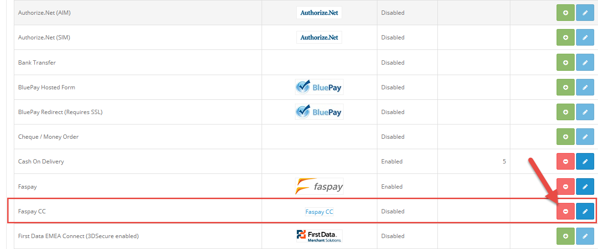
Tampilan untuk install plugin Faspay CC pada Opencart
Prestashop
Faspay menyediakan integrasi dengan prestashop melalui plugin yang telah kami sediakan untuk transaksi kredit. File plugin untuk prestahop ditambahkan melalui web admin.
Langkah-langkah integrasi dengan Prestashop :
- Login pada web admin prestahop
- Pilih Module and Services.
- Klik add a new Module.
- Klik Choose a file
- Pilih file dengan ekstensi .tar, .tar.gz, .tgz atau .zip
- Setelah itu pilih Upload this module.
- Jika berhasil akan muncul informasi The module was successfully downloaded
- Lanjut ke proses konfigurasi, pilih tab Module and Services -> Payment.
- Kemudian View all payment list untuk melihat semua list payment yang sudah di install / sudah ada di prestashop.
- Klik button dan Enable untuk mengaktifkan payment channel di prestashop yang sudah di install
- klik Configure untuk setting detail
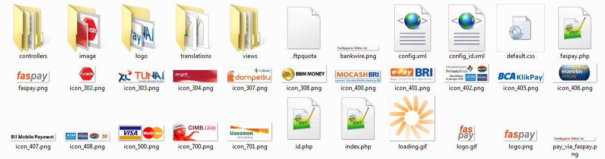
Contoh File dari Faspay untuk Prestashop
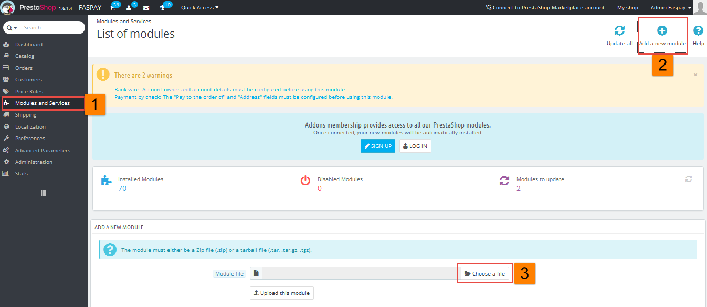
Menu untuk menambahkan module
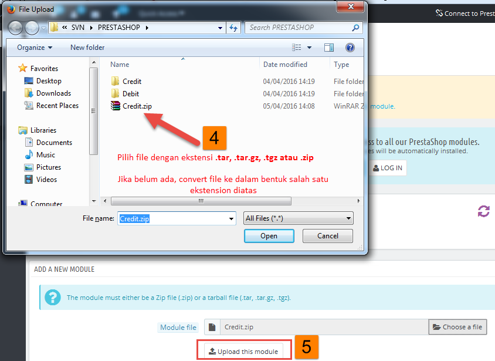
File untuk di upload di module
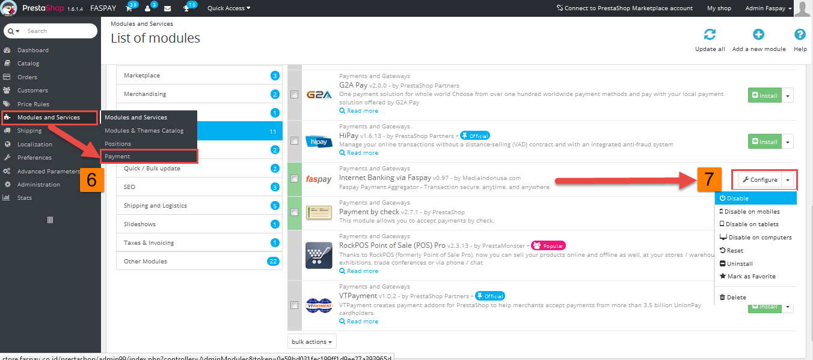
List Payment Faspay yang sudah terinstall
WooCommerce
Faspay menyediakan integrasi dengan WooCommerce melalui plugin yang telah kami sediakan untuk transaksi kredit. File plugin untuk WooCommerce ditambahkan melalui web admin.
Langkah-langkah integrasi dengan WooCommerce :
- Setelah login web Admin, pilih tab Plugin
- Klik Add New 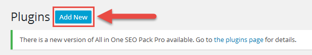
- Klik Upload Plugin 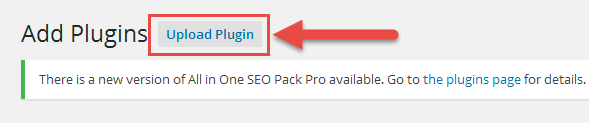
- Pilih file dengan ekstension ekstensi .tar, .tar.gz, .tgz atau .zip kemudian pilih Install Now untuk melakukan penginstallan.
- Setelah selesai melakukan penginstallan, kemudian user buka tab WooCommerce -> Setting
- Setelah itu, pilih tab Check out -> faspaycc (untuk faspay kredit)
- User kemudian memasukan data konfigurasi dan payment channel yang akan di setting
Contoh File dari Faspay untuk WooCommerce
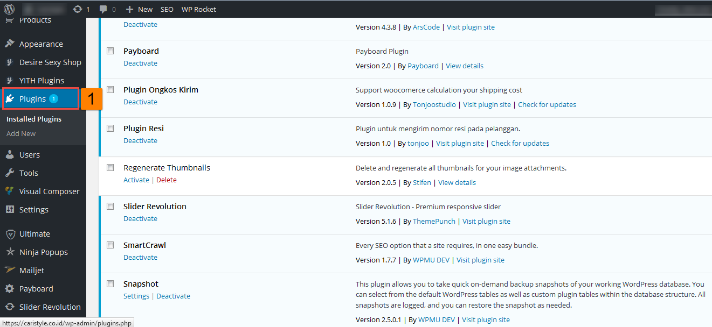
Settingan di WooCommerce
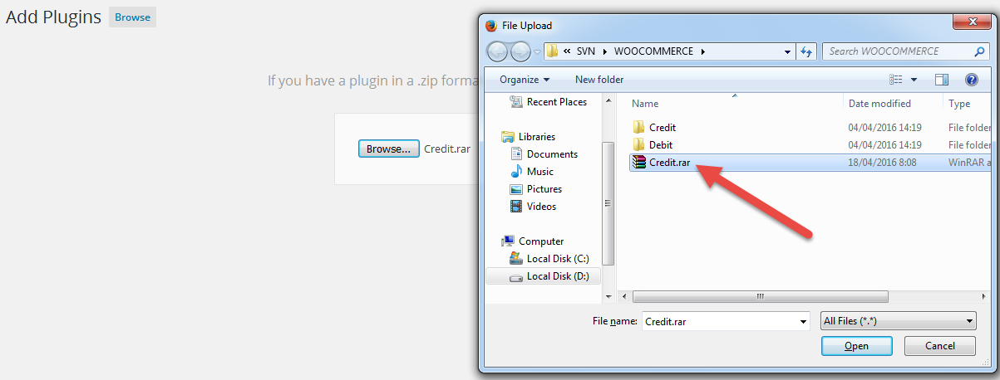
Pilih File untuk Install

Menu Setting di WooCommerce
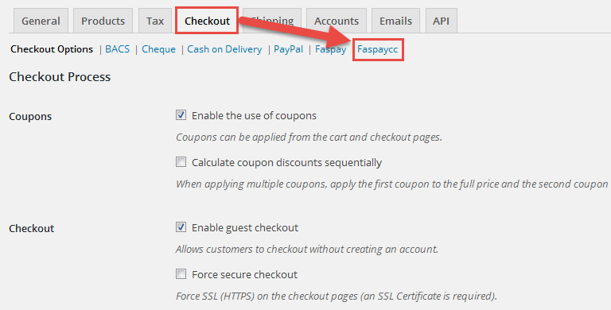
Tampilan untuk Setting Check Out Faspay CC
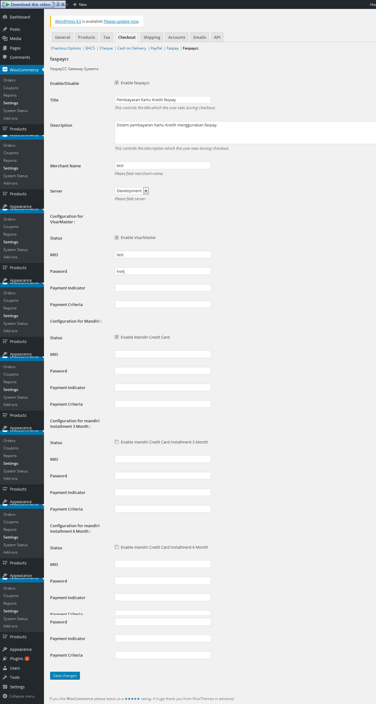
Tampilan Input Data Konfigurasi dan Payment Channel
Reference
Pada bagian ini akan dijelaskan mengenai referensi pendukung untuk memudahkan pemahaman dalam melakukan setting maupun integrasi dengan Faspay.
Faspay e-Payment Error Code Listing - CC
Referensi ini menampilkan berbagai kode error yang dikirimkan dari system Faspay berikut dengan penjelasannya.
| ERR_CODE | Error Description |
|---|---|
| 0 | No error. Refers to bank error codes fields. |
| 5500 | Sorry, an error occurred while query e-Payment Server! |
| 5501 | Insufficient parameters: MERCHANTID is empty. |
| 5502 | Insufficient parameters: TRANSACTIONID is empty. |
| 5503 | Insufficient parameters: DESCRIPTION is empty. |
| 5504 | Insufficient parameters: TRANSACTIONTYPE is empty. |
| 5505 | Insufficient parameters: Please enter your credit card number. (parameter ‘CARDNO’ is empty). |
| 5506 | Insufficient parameters: Please enter your credit card type. (parameter ‘CARDTYPE’ is empty). |
| 5507 | Insufficient parameters: Please enter your name as appeared on credit card. (parameter ‘CARDNAME’ is empty). |
| 5508 | Insufficient parameters: Please enter your credit card expiry month. (parameter ‘EXPIRYMONTH’ is empty). |
| 5509 | Insufficient parameters: Please enter your credit card expiry year. (parameter ‘EXPIRYYEAR’ is empty). |
| 5510 | Insufficient parameters: NEWTRANSACTION is empty |
| 5511 | Insufficient parameters: MERCHANT_TRANID is empty. |
| 5512 | Insufficient parameters: SUBMIT_URL is empty. |
| 5513 | Sorry, an error occurred while processing your transaction. |
| 5514 | Invalid value for AMOUNT |
| 5515 | Invalid value for NEWTRANSACTION! Accepted Value :Yes=Y, No=N |
| 5516 | TRANSACTIONTYPE not supported |
| 5517 | Invalid value for TRANSACTIONTYPE! For a New Transaction (NEWTRANSACTION=Y), Accepted Value: SALES=1, AUTHORIZED=3 |
| 5518 | Sorry, your card is invalid and we are unable to accept your card. Please try with another card. |
| 5519 | Sorry, your card has expired. Please use another card. |
| 5520 | Sorry, an error occurred while verifying your credit card. Please try again or use another card. |
| 5521 | Sorry, your card type is invalid. We only accept Visa or Master card. Accepted Value for parameter CARDTYPE: Visa = V, Master = M |
| 5522 | Credit card transaction type does not match value defined in the merchant id specified. Please try again. |
| 5523 | Card no length is invalid. Please try again or use another card. |
| 5524 | Sorry, the system is unable to locate the merchant id specified. |
| 5525 | Sorry, the system is unable to determine acquiring bank to process your transaction. Please try afainn or use another card. |
| 5526 | Sorry, an error occurred when loading payment adapter to process your transaction. |
| 5527 | Sorry, we are unable to proceed with your transaction as your profile has been blacklisted in our system. |
| 5528 | Sorry, your merchant settings do not allowed you to use CAPTURE API. |
| 5529 | Sorry, you do not have the permission to access this transaction. |
| 5530 | MERCHANT_TRANID submitted already exists. Duplicate submission is not allowed! Please use another value. |
| 5531 | The AMOUNT submitted do not matched with the AMOUNT previously submitted to the system. |
| 5532 | Error setting mandatory fields, please pass in either Merchant_TRANID or TRANSACTION_ID! |
| 5533 | Unable to locate transaction with the TRANSACTION_ID or MERCHANT_TRANID specified! |
| 5534 | Sorry, the shipping address (parameter ‘SHIPPING_ADDRESS) entered is too long. The maximum length allowed is 255 characters. |
| 5535 | Sorry, the billing address (parameter 'BILLING_ADDRESS’) entered is too long. The maximum length is 255 characters. |
| 5536 | Sorry, the e-mail entered (parameter ‘CUSTEMAIL’) entered is too long. The maximum length allowed is 100 characters. |
| 5537 | Sorry, the description (parameter ‘DESCRIPTION’) for this transaction is too long. The maximum length is 100 characters. |
| 5538 | Sorry, the name on credit card (parameter ‘CARDNAME’) is too long. Please shorten it. The maximum length allowed is 100 characters. |
| 5540 | Sorry, the merchant reference no (parameter ‘MERCHANT_TRANID’) is too long. The maximum length allowed is 100 characters. |
| 5541 | Insufficient parameters: Shopper E-mail Address (parameter ‘CUSTEMAIL’ ) is empty. Please provide your e-mail address. |
| 5542 | Insufficient parameters: Shopper IP address (parameter ‘SHOPPER_IP’) is empty. |
| 5543 | Sorry, the system cannot process your transaction as your merchant account has been suspended. |
| 5544 | Sorry, your merchant setting do not allow transaction request accepted from this IP. |
| 5545 | Sorry, the system cannot process your transaction as your merchant account settings are incorrect. |
| 5546 | Sorry, we are unable to confirm the status of your transaction as bank response is incorrect or empty. |
| 5547 | Sorry, the system is unable to get any response from bank. Please check with your issuer bank to confirm the status of your purchase and inform your merchant of the status. |
| 5548 | Sorry, the system is unable to proceed with your request because of insert failure at database. |
| 5549 | Sorry, the system is unable to proceed with your request because the amount submitted does not match original amount. |
| 5550 | Sorry, your IP address is invalid. |
| 5551 | Sorry, the system is unable to connect to the bank. Please try again later. |
| 5552 | Sorry, the system is unable to get any response from bank (connection timeout). Please check with your issuer bank to confirm the status of your purchase and inform your merchant of the status. |
| 5553 | Sorry, the transaction cannot be captured as the transaction status is not authorized. |
| 5554 | Sorry, the system cannot process your transaction as your merchant account has not been activated. |
| 5555 | Sorry, your merchant settings do not allowed you to use REFUND API. |
| 5557 | Sorry, your merchant settings do not allowed you to use VOID API. |
| 5560 | Sorry, you cannot refund the transaction as the transaction status is not capture/sales. |
| 5562 | Sorry, this transaction cannot be voided. Only transaction with status ‘P/A/C/S/RC’ can be voided. |
| 5566 | Insufficient parameters: Transaction signature (parameter ‘SIGNATURE’) is empty. |
| 5567 | Transaction signature (parameter ‘SIGNATURE’) submitted is invalid. |
| 5568 | Sorry, the system is unable to proceed with your request because the MERCHANT_TRANID submitted does not match original value. |
| 5569 | Sorry, the refund amount submitted is invalid. Refund amount must be positive and cannot be more than the original amount submitted. |
| 5574 | Sorry, this transaction cannot be processed as the amount exceeded the maximum amount allowed or lower than the minimum amount allowed. |
| 5575 | Insufficient parameters: CURRENCYCODE is empty. |
| 5576 | Currency setting is not configured. |
| 5577 | PAYMENT_MODE is empty or invalid. |
| 5578 | No payment mode is configured. Unable to proceed. |
| 5579 | Sorry, please enter a shorter value for your customer name (parameter ‘CUSTNAME’). The maximum length allowed is 120 characters. |
| 5582 | Insufficient parameters: Please enter your credit card cvc/cvv number. (parameter ‘CARDCVC’ is empty). |
| 5583 | Sorry, your card cvc/cvv value is invalid. Please ensure you have the value entered correctly. |
| 5584 | Sorry, your card expiry month value is invalid. Please ensure you have the value entered correctly. |
| 5585 | Sorry, your card expiry year value is invalid. Please ensure you have the value entered correctly. |
| 5588 | Unable to locate transaction with the TRANSACTION_ID specified! |
| 5590 | Sorry, we are unable to proceed with your transaction as it has been blocked in our system based on criteria of issuing country, ip and currency. |
| 5594 | Sorry your transaction has been blocked, the credit card number not accepted based on the filter code due to card range not being set properly. please try again with card number within your filter code allowed credit card bin number range |
| 5595 | Sorry your transaction has been blocked, the credit card number not accepted based on the filter code due to card range not being set properly. please try again |
| 5596 | Phone length exceed the limit, maximum length is 20 |
| 5597 | Abandon transaction by customer. |
| 5598 | Sorry, your request cannot be processed due to the specified payment criteria was invalid or not found ! |
| 5599 | Installment plan not found. Merchant does support this installment plan. |
| 5600 | Mismatch number of Payment Indicator and Payment Criteria. |
| 5601 | Invalid delimiter for Payment Indicator & Payment Criteria. Use ‘;’ only. |
| 5602 | For 3rd party booking, indicate ‘yes’. Otherwise indicate ‘no’. |
| 5603 | Invalid payment indicator. |
| 5604 | Insufficient parameters: Please enter card issuing bank. (parameter ‘CARD_ISSUER_BANK’ is empty). |
| 5605 | Sorry, the card issuing bank (parameter ‘CARD_ISSUER_BANK’) entered is too long. The maximum length allowed is 200 characters. |
| 5606 | Insufficient parameters: Please enter card holder’s identity reference type. (parameter ‘CARD_IDENTITY_REF_TYPE’ is empty). |
| 5607 | Invalid card holder’s identity reference type (parameter ‘CARD_IDENTITY_REF_TYPE’). |
| 5608 | Insufficient parameters: Please enter card holder’s identity reference. (parameter ‘CARD_IDENTITY_REF’ is empty). |
| 5609 | Sorry, the card holder’s identity reference (parameter ‘CARD_IDENTITY_REF’) entered is too long. The maximum length allowed is 20 characters. |
| 5610 | Insufficient parameters: Please enter card holder’s phone number. (parameter ‘CARD_PHONE’ is empty). |
| 5611 | Sorry, the card holder’s phone number (parameter ‘CARD_PHONE’) entered is too long. The maximum length allowed is 25 characters. |
| 5612 | Insufficient parameters: Please enter card holder’s email address. (parameter ‘CARD_EMAIL’ is empty). |
| 5613 | Sorry, the card holder’s email address (parameter ‘CARD_EMAIL’) entered is too long. The maximum length allowed is 100 characters. |
| 5614 | Invalid card holder’s email address (parameter ‘CARD_EMAIL’). |
| 5615 | Insufficient parameters: Please enter customer name. (parameter ‘CUSTNAME’ is empty). |
| 5616 | Sorry, we are unable to proceed your transaction as the E-Wallet response is incorrect. |
| 5617 | Sorry, the system is unable to connect to the E-Wallet. Please try again later. |
| 5618 | Sorry, the system is unable to get any response from E-Wallet. Please check in Faspay E-Wallet and confirm the status of your purchase and inform your merchant of the status. |
| 5619 | Sorry, the system encounters some problem while processing your transaction. Please check in Faspay E-Wallet to confirm the status of your purchase and inform your merchant of the status. |
| 5620 | Invalid currency code. |
| 5621 | Fail to perform Void with Bank. Please check with bank for further details. |
| 5622 | Insufficient parameters: RETURN_URL is empty. |
| 5623 | Sorry, your merchant settings do not allowed you to use ADJUST STATUS API. |
| 5624 | Invalid Bank Authorized ID. |
| 5625 | Unable to do refund transaction anymore because the transaction amount have fully refund. |
| 5626 | Unable to do Void because this transaction have done Refund Transaction. |
| 5627 | Fail to perform Refund with Bank. Please check with bank for further details. |
| 5628 | Sorry, your acquirer settings do not support refund transaction or the refund url is empty. |
| 5629 | Fail to perform transaction with bank. There are some missing required field(s). |
| 5630 | Fail to perform transaction with bank. There are some invalid required field(s). |
| 5631 | Bank failed to do Sales/Auth transaction. Please check your transaction settings with bank. |
| 5632 | Fail to redirect receipt page. The response type is invalid, the expected response type is ‘OUT_PRINT’. |
| 5633 | Insufficient parameters: The merchant main page url in parameter ‘MREF7’ is empty. |
| 5634 | Time out occurred while in Payment Window process. |
| 6000 | Sorry, there was error occurred when performing fraud analysis. |
| 6001 | Error setting mandatory fields for 3D transaction, MPI_CODE is empty! |
| 6002 | Invalid value for TRANSACTION ID |
| 6100 | Error setting mandatory fields for 3D transaction, MPI_CODE is empty! |
| 6102 | Received MPI MD does not match for transaction id. |
| 6103 | Unable to retrieve MPI MD. |
| 6104 | There was an error occurred during 3D authentication with MPI. Please check logs for details. |
| 6105 | Invalid message or response received from MPI. Please try again. |
| 6106 | MPI Settings are not configured correctly. Please check MPI_HOST and MPI_PORT in system configuration. |
| 6107 | Error occurred when trying to display ACS Form in web browser for 3D authentication. Please try again. |
| 6108 | MPI result fails. Reject transaction base on setting. |
| 6109 | Unable to locate back transaction to update system after 3-D authentication process. Please try again. |
| 6110 | Empty response received from MPI, please try again. |
| 6111 | Empty response received from ACS, please try again. |
| 6112 | Transaction was aborted because 3-D authentication process is not completed. |
| 6117 | Time out occurred while waiting for ACS response. |
| 6118 | Error mandatory fields for 3D transaction, XID is empty! |
| 6119 | Error mandatory fields for 3D transaction, ECI is empty! |
| 6120 | Error mandatory fields for 3D transaction, CAVV is empty! |
| 6121 | Error mandatory fields for 3D transaction, AUTHSTATUS is empty! |
| 6200 | Sorry, the system encounters some problem while processing your tokenization request. |
| 6201 | Insufficient parameters: parameter ‘PYMT_TOKEN’ is empty. |
| 6202 | Sorry, the system encounters some problem while attempt to update tokenization status. |
| 6300 | Sorry, the requested transaction status is invalid to adjust transaction status. |
| 6301 | Sorry, the transaction cannot adjust to Authorised as the current transaction status is not Capture Failed / Capture Reconfirm. |
| 6302 | Sorry, the transaction cannot adjust to Authorised as the bank authorization code submitted does not match the transaction. |
| 7000 | No data found! |
| 7001 | Insufficient parameters: parameter ‘LANG’ is empty. |
| 7002 | Attachment size is bigger than the allowed size. |
| 7003 | Failed sending payment link email. |
| 7004 | Insufficient parameters: PAYMENTLINKID is empty. |
| 7005 | Sorry, the system is unable to locate the payment link transaction with the id specified. |
| 7006 | The transaction is already being processed, duplicate submission is not allow |
| 7007 | The current payment link status is unavailable for process. |
| 7008 | The payment link transaction has been expired. |
| 9992 | Insufficient parameters: Please enter customer mobile device. (parameter ‘MOBILE_DEVICE’ is empty). |
| 9993 | Insufficient parameters: Please enter customer mobile screen width and height. (Parameter ‘MOBILE_WIDTH’ or ‘MOBILE_HEIGHT’ is empty). |
| 9994 | User browser does not support Javascript. |
| 9995 | Exit browser by customer. |
| 9996 | Sorry, invalid payment method for Capture/Void API, please check the parameters. |
| 9997 | Sorry, online query not supported by acquiring bank. |
| 9998 | Cancel payment by customer. |
| 9999 | Sorry, the system encounters some problem while processing your transaction. Please check with your issuer bank to confirm the status of your purchase and inform your merchant of the status. |
| None of the above | Undefined Error. |
Transaction Status - CC
Referensi ini menampilkan berbagai status transaksi yang dikirimkan dari system Faspay berikut dengan penjelasannya. Status transaksi pada sistem faspay ini berasal dari bank acquiring atau pihak ketiga seperti CUP, M2U.
| Transaction Status Code | Transaction Status | Description |
|---|---|---|
| N | Pending | Initial default value of TXN_STATUS in Faspay e-Payment. All new transaction will be stored in Faspay e-Payment with this value until it’s processed. |
| A | Authorized | Transaction is successfully authorized in bank. |
| E | Error | Error occurred while processing transaction. The error may originate from Faspay e-Payment or acquiring bank. |
| C | Captured | Transaction is successfully sent for captured in bank. |
| CF | Capture Failed | Capture request failed |
| S | Sales | Transaction is successfully approved for sales request in bank. |
| F | Not Approved | Transaction is declined from bank. |
| RC | Reconfirm | System unable to get response from bank. Cardholder or merchant need to reconfirm with bank of the actual transaction status. |
| CB | Chargeback | Chargeback transaction |
| V | Void | Transaction is void. |
| B | Blocked | Transaction is blocked. |
| CR | Capture Reversal | Transaction that has been capture previously has been successfully reversed. |
| CRF | Capture Reversal Failed | Capture reversal request failed. |
| SR | Sale Reversal | Transaction has been reversed. |
| SRF | Sale Reversal Failed | Sale reversal request failed. |
| PCR | Pending Capture Reversal | Capture reversal in progress. |
| PSR | Pending Sale Reversal | Sale reversal is in progress. |
| PCB | Pending Chargeback | Chargeback is in progress. |
| I | Incomplete | Transaction not successful. The error originate from Faspay e-Payment due to network issue, incorrect behavior of user (browser closing), etc. |
Acquiring Bank Code - CC
Referensi ini menampilkan berbagai daftar kode acquiring Bank yang terhubung dengan Faspay berikut dengan penjelasannya.
| Code | Bank |
|---|---|
| 001 | Maybank Malaysia |
| 002 | Bank Islam Malaysia |
| 003 | Citibank Malaysia |
| 004 | Public Bank Malaysia |
| 005 | CIMB Bank Malaysia (formerly known as Southern Bank Malaysia) |
| 006 | UOB Singapore |
| 007 | DBS Singapore |
| 008 | Citibank Singapore |
| 009 | RHB Malaysia |
| 010 | HSBC |
| 011 | Bank Internasional Indonesia |
| 012 | Standard Chartered Bank |
| 013 | American Express |
| 014 | Alliance Bank Malaysia |
| 015 | Bank Central Asia Indonesia |
| 997 | Simulator |
| 998 | Others |
| 999 | Not Available |
End User Indicator (EUI)
Referensi ini menampilkan berbagai kode EUI yang digunakan untuk menunjukkan bagaimana web server merchant harus bereaksi untuk menangani respon transaksi yang diterima dari sistem faspay.
| EUI | Description |
|---|---|
| SUC | Success, When merchant get this response, the page to response to the customer should be inform customer of successful authorization and transaction will be processed immediately |
| RTY | Retry. This indicator is return when TXN Status is F/RC/N/ or E. Merchant system should then advise the user to resubmit/retry to submit a new order. Because the initial request was not approved or data is insufficient |
| ALT | Alert. This indicator is used to inform merchant that the transaction cannot be auto-capture. This scenario can happen either because the auto capture threshold has been crossed or the system is unable to contact the FDS for a fraud risk score to be calculated. Merchant are advise to inform their customer that the transaction will be process require they staff to check the transaction first fore it can be processed. This is only applicable to credit card transaction. |
| NA | Not Applicable, NA is return when auto capturing function is disabled; EUI is primarily to indicate to merchant if the transaction will be auto captured or if the transaction requires manually intervention. This is only applicable to credit card transaction. |
Supported Payment Methods
Referensi ini menampilkan berbagai kode payment method yang support dengan Faspay berikut dengan penjelasannya.
| Payment_Method | Description |
|---|---|
| 1 | Credit Card / Debit Card |
| 2 | Maybank2u |
| 3 | FPX |
| 4 | CUP |
| 5 | Kiosk (reserved for future) |
| 6 | Cash (reserved for future) |
| 7 | 7-eleven (reserved for future) |
| 8 | CIMB Clicks |
| 9 | ENets |
| 10 | PBB Payment Agent |
| 11 | MIDAZZ Prepaid |
| 12 | KlikBCA |
| 13 | Paypal Express Checkout |
| 14 | RHB Payment Gateway |
| 15 | AliPay |
Supported Languages
Referensi ini menampilkan parameter values untuk bahasa yang di dukung di Faspay.
| Language | Parameter Values |
|---|---|
| English | En |
| Malay | Ms |
| Simplified Chinese | zh-Hans |
| Traditional Chinese | Zh-Hant |
| Indonesia | id |
Categories of User Code and User Message - CC
Referensi ini menampilkan berbagai kode pesan dari sisi user / customer berikut dengan penjelasannya.
| User Code | Categories | Descriptions |
|---|---|---|
| 101 | Transaction Approved | Transaction approved. |
| 102 | Transaction Declined – Refer Bank | Shopper may refer to bank for more information or assistance when the transaction is being declined. |
| 103 | Transaction Declined – Refer Merchant | Shopper may refer to merchant for more information or assistance when the transaction is being declined. |
| 104 | Transaction Declined – Invalid card details | To alert shopper in order to input a valid card details. This category is meant for credit card transaction usage at the moment, may be applicable for direct debit transaction in future. |
| 105 | Transaction Declined – Refer cardholder | To alert shopper to refer to credit card holder when there is a dispute/cancellation on transaction request. |
| 106 | Transaction Declined – Unknown Response | For the usage of unknown response return from bank side or Faspay e-Payment system. |
| 107 | Transaction Declined – Refer e-Wallet | Shopper may refer to e-Wallet for more information or assistance when the transaction is being declined. |
| 108 | Transaction Accepted – Refer shopper | Transaction accepted but pending action from shopper to make payment. |
Card Holder’s Identity Reference Type - CC
Referensi ini menampilkan berbagai kode kartu dari sisi user / customer berikut dengan penjelasannya.
| Code | Description |
|---|---|
| IC | Identity Card |
| Passport | Passport |
Supported Currencies
Referensi ini menampilkan kode mata uang yang di dukung di Faspay
| Code | Description |
|---|---|
| AED | United Arab Emirates Dirham |
| AUD | Australian Dollar |
| BND | Brunei Dollar |
| CHF | Swiss Franc |
| CNY | Chinese Yuan |
| EGP | Egyptian Pound |
| EUR | Euro |
| GBP | Pound Sterling |
| HKD | Hong Kong Dollar |
| IDR | Indonesian Rupiah |
| INR | Indian Rupee |
| JPY | Japanese Yen |
| KRW | South Korean Won |
| LKR | Sri Lankan Rupee |
| MYR | Malaysian Ringgit |
| NZD | New Zealand Dollar |
| PHP | Philippine Peso |
| PKR | Pakistani Rupee |
| SAR | Saudi Riyal |
| SEK | Swedish Kronor |
| SGD | Singapore Dollar |
| THB | Thai Baht |
| TWD | New Taiwan Dollar |
| USD | United States Dollar |
| ZAR | South African Rand |
MPI Status
Referensi ini menampilkan berbagai status MPI yang dikirimkan dari system Faspay berikut dengan penjelasannya.
| User Code | Categories | Descriptions |
|---|---|---|
| 1 | NEW | Transaction received, begin 3D process. |
| 2 | PROCESSING | Payment Authentication Response received begin processing message. |
| 3 | ERROR | Exception during 3D process. |
| 4 | COMPLETED | 3D process completed. |